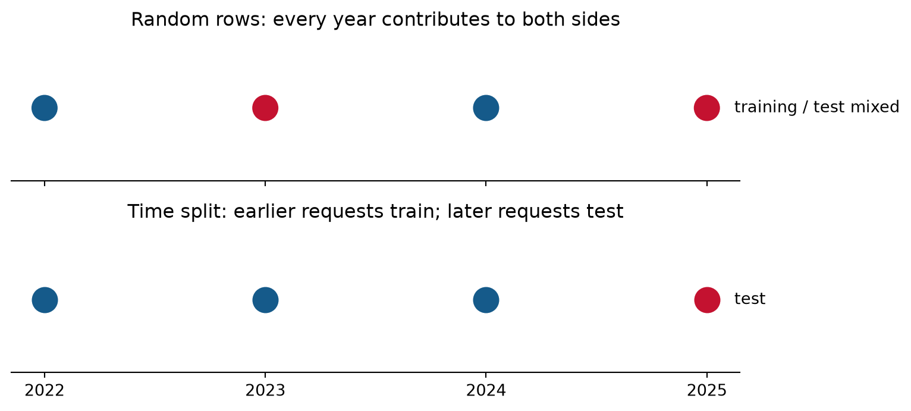
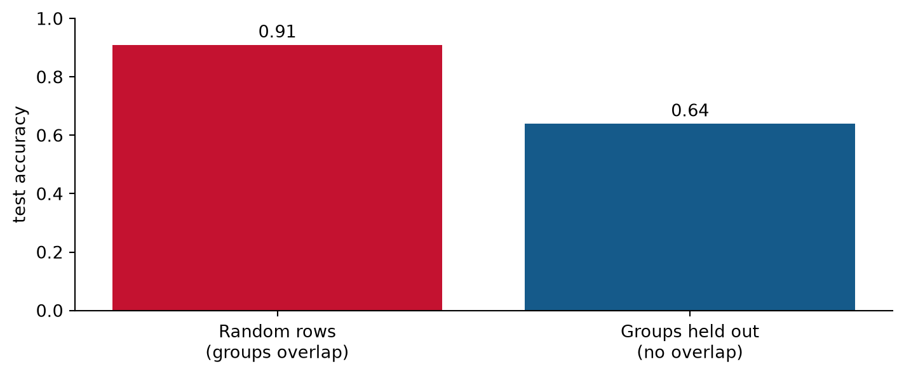

Following the evidence
In Lecture A, we:
Today we use EDA and a plausible analysis plan to see whether those decisions survive contact with the data.
Our help-desk question from Lecture A was:
For later email requests in four queues, how much more often does a language model predict the recorded queue than a simple word model?
That one sentence fixes several choices:
Randomly split all available requests. Remove rare words using the full file. Try several queue groupings and model settings. Report the setup with the highest test accuracy and use the language model if it wins.
Nothing here looks absurd. That is why it needs an audit.
Before discussing code, underline every phrase that quietly makes a study decision.
| Stage | What EDA should make visible |
|---|---|
| Cases | who entered the file—and who did not |
| Outcome | how queue labels were produced and how common they are |
| Structure | time order, repeated people, templates, and near-duplicates |
| Features | vocabulary, missing text, and changes in wording |
| Evaluation | which cases, metrics, and comparisons answer the question |
| Claim | which future requests the result can reasonably describe |
EDA exposes mismatches early. A later modeling step cannot make email-only data represent phone calls.
| Question | Example answer |
|---|---|
| What could go wrong? | Similar requests may appear in training and test. |
| Why does that matter here? | The test should represent later, genuinely new requests. |
| How would we change it? | Split by time and check repeated groups. |
Avoid stopping at a label such as “bias” or “leakage.” State the path from the choice to the misleading result.

If the claim is about later requests, the time split rehearses that future use.
Suppose one template appears in both 2023 and 2025. A time split respects the calendar but still lets closely related text cross the boundary.
The code makes the rule checkable. It does not explain why the rule is right; that explanation comes from the intended use.
Imagine each customer group uses a distinctive signature:
| Group | Training request | Test request |
|---|---|---|
| 17 | “acct-reset-17 password failed” | “acct-reset-17 login failed” |
| 42 | “vpn-device-42 cannot connect” | “vpn-device-42 offline” |
With a random-row split, the model can learn the group fingerprint and see it again at test time. A group-held-out split removes that shortcut.
This is duplicate contamination: closely related cases cross the split and make the test less like genuinely new cases.
Imagine simulated data with repeated requests from the same customer groups. Each group uses a stable identifying phrase, and that phrase partly predicts its queue. The two test designs represent different future settings:

These are illustrative results, not a universal law. If future requests come from the same customer groups, random rows may be the better representation of future use. If the model must serve new groups, holding out groups is the relevant test. Neither split is inherently more valid; each targets a different future distribution.
Vocabulary learned before the split
flowchart LR A[All text] --> B[Learn word weights] B --> C[Split] C --> D[Fit and test]
Vocabulary learned from training only
flowchart LR A[Split] --> B[Learn words and model] B --> C[Apply to validation]
The first order lets validation or test words influence what the model keeps.
A scikit-learn pipeline is one object that learns the text conversion and the classifier in the correct order.
from sklearn.pipeline import make_pipeline
from sklearn.feature_extraction.text import TfidfVectorizer
from sklearn.linear_model import LogisticRegression
def make_model(min_df):
return make_pipeline(
TfidfVectorizer(min_df=min_df),
LogisticRegression(max_iter=2000),
)
model = make_model(min_df=2)
model.fit(training["text"], training["label"])
prediction = model.predict(validation["text"])min_df stands for minimum document frequency. Here, one document is one request, so min_df=2 keeps a word only if it appears in at least two training requests.
candidate_values = [1, 2, 5]
validation_scores = []
for value in candidate_values:
model = make_model(min_df=value)
model.fit(training["text"], training["label"])
prediction = model.predict(validation["text"])
validation_scores.append(accuracy_score(validation["label"], prediction))
selected_value = candidate_values[np.argmax(validation_scores)]
assert selected_value in candidate_valuesThe candidate list should be fixed before the scores are known. After choosing, we refit the selected plan and open the test set once.
Before test evaluation, save:
After test evaluation, do not quietly revise these choices. New questions may be studied, but they need to be labeled as follow-up work with new evidence.
Suppose the simple model is 71% accurate and the baseline is 40% accurate on the same test cases.
\[ \text{observed improvement}=71\%-40\%=31\text{ percentage points}. \]
If an uncertainty interval for the improvement is 21 to 40 points:
An interval cannot compensate for a poor split or missing kinds of cases.
For each test case, record whether each method is correct:
np.float64(0.3333333333333333)Both methods predict the same cases, so we resample whole cases and keep the two outcomes together. This is a paired bootstrap. It mimics drawing a new set of cases while preserving the comparison within each case.
| What EDA or the study question reveals | Design decision | What to record |
|---|---|---|
| The target is later requests | split in time order | requests by year and set |
| Templates or people appear repeatedly | keep each group in one set | number of groups shared across sets |
| Vocabulary is a learned feature | learn it from training only | pipeline settings and training vocabulary |
| Test feedback could influence selection | choose on validation; evaluate test once | frozen choices and final test output |
A useful record says what changed, why it changed, and what evidence shows that the final analysis followed the decision. “Leakage addressed” does not say enough.
After every design change, ask:
Which kinds of requests are absent from the observed data?
Examples:
No split, model, or uncertainty interval can establish performance for cases that were never observed. Narrow the target population or collect data from the missing cases.
Weak request
Determine whether the language model is better.
Specified request
Compare the language model with the fixed simple model on the locked later test set. Use accuracy, report the paired difference and interval, and do not change categories or settings after seeing test results. State that the tool only recommends a queue for staff review.
The second prompt improves the analysis because it supplies missing decisions, not because it sounds more polished.
If a detailed prompt produces a better plan than a weak prompt, we may describe the differences in those two answers.
We cannot conclude that every difference was caused by the prompt because AI systems can vary from one response to another.
A stronger test of the prompt effect would use:
For Homework 3, the goal is careful auditing—not a full prompt experiment.
Record enough for another person to understand the workflow:
| Item | Example |
|---|---|
| Tool | name and version, when available |
| Purpose | draft a simulation or analysis plan |
| Initial prompt | exact request that began the work |
| Output used | code scaffold, explanation, or plan |
| Checks | fixed seed, overlap check, assertions, rerun |
| Human decision | split, metric, threshold, final claim |
The record shows what was delegated and what was verified.
In the CFPB lab, you will:
The lab uses only 2022 and 2023. Homework keeps the later choices and final results for you.
flowchart LR A[Problem 1<br/>design in words] --> B[Problem 2<br/>use EDA and run code] B --> C[Problem 3<br/>compare AI plans]
The same five questions from Lecture A apply to all three problems.